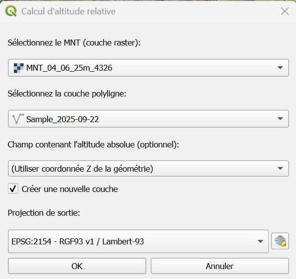
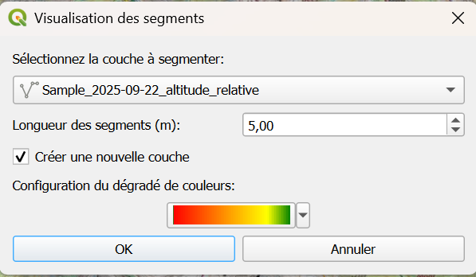
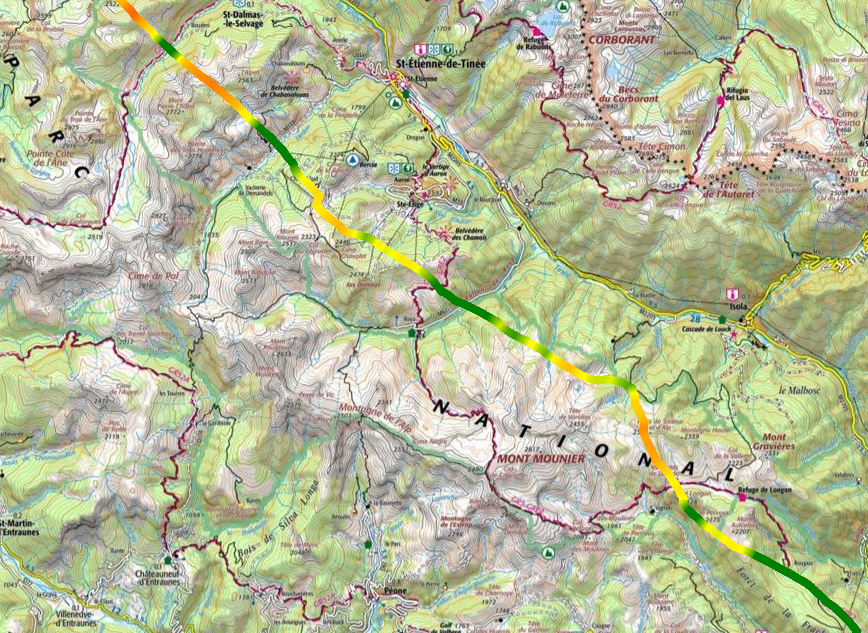
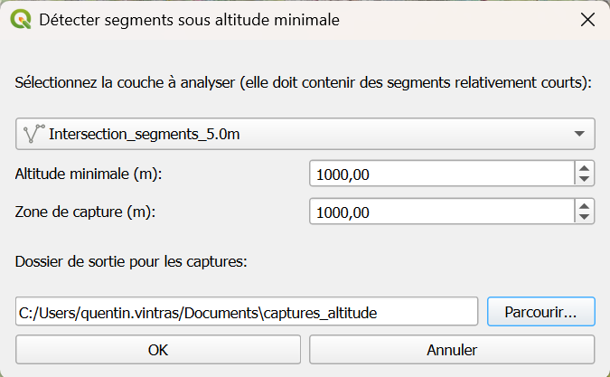

Documentation Utilisateur - Plugin Analyse Survol
Introduction
Le plugin Analyse Survol est un outil QGIS conçu pour analyser les trajectoires de vol et calculer les altitudes relatives par rapport au sol. Il est particulièrement utile pour : - L'analyse de conformité des vols par rapport aux altitudes minimales réglementaires - La visualisation des segments de vol avec codes couleur selon l'altitude - La détection automatique des dépassements d'altitude minimale - La génération de rapports visuels avec captures de carte
Caractéristiques principales
- Calcul d'altitude relative : Calcule l'altitude de vol par rapport au terrain
- Visualisation colorée : Affichage des segments avec dégradé de couleur selon l'altitude
- Détection automatique : Identification des zones de dépassement d'altitude minimale
- Génération de rapports : Captures automatiques avec marqueurs et distances
- Support multi-projections : Transformation automatique entre systèmes de coordonnées
Installation
Prérequis
- QGIS 3.40 ou version ultérieure
- Python 3.12+
- Modules Python : numpy (généralement inclus avec QGIS)
Installation depuis le depot de plugins QGIS du Parc national du Mercantour
- Si le dépôt QGIS du Parc national du Mercantour n'est pas configuré dans QGIS suivre la procédure d'installation
- Dans QGIS allez dans Extensions → Installer/Gérer les extensions, dans l'onglet Toutes, recherchez l'extension
Analyse Survolpuis cliquez sur Installer
Vérification de l'installation
Après activation, vous devriez voir : - Une nouvelle barre d'outils "Analyse Survol" avec 3 boutons d'actions - Un menu "Analyse Survol" dans le menu Vecteur
Remarque : Effectuez les mises à jour du plugin régulièrement.
Prise en main
Interface utilisateur
Le plugin ajoute trois outils principaux accessibles via : - Barre d'outils : Trois boutons avec icônes - Menu Vecteur : Sous-menu "Analyse Survol"
Données requises
Pour utiliser le plugin, vous devez disposer de : 1. Couche MNT (Modèle Numérique de Terrain) : Raster représentant l'altitude du sol 2. Couche de trajectoire : Ligne 3D (LineStringZ) avec coordonnées Z représentant l'altitude de vol
Format des données
- Trajectoires : Format LineStringZ ou MultiLineStringZ avec coordonnées Z
- MNT : Format raster (GeoTIFF, ASCII Grid, etc.)
- Systèmes de coordonnées : Tous systèmes supportés par QGIS (transformation automatique)
Fonctionnalités
1. Calcul d'altitude relative
Objectif : Calculer l'altitude de vol par rapport au terrain pour chaque point de la trajectoire.
Fonctionnement : - Échantillonne l'altitude du sol (MNT) le long de la trajectoire - Calcule la différence entre l'altitude de vol et l'altitude du sol - Génère une nouvelle couche avec les altitudes relatives
Options disponibles : - Choix de la projection de sortie - Utilisation des coordonnées Z ou d'un champ d'attribut - Création d'une nouvelle couche ou modification de l'existante
2. Visualisation des segments colorés
Objectif : Créer une visualisation colorée des segments de vol selon leur altitude.
Fonctionnement : - Découpe la trajectoire en segments de longueur fixe - Calcule l'altitude moyenne de chaque segment - Applique un code couleur basé sur un dégradé personnalisable
Options disponibles : - Longueur des segments (0.1 à 100 mètres) - Configuration du dégradé de couleurs - Épaisseur des traits (1.25mm par défaut)
3. Détection des dépassements d'altitude minimale
Objectif : Identifier automatiquement les zones où l'altitude de vol est inférieure à un seuil.
Fonctionnement : - Analyse tous les segments de la trajectoire - Identifie les groupes de segments consécutifs sous l'altitude minimale - Génère des captures de carte avec marqueurs de début/fin - Calcule les distances de dépassement
Options disponibles : - Altitude minimale configurable - Taille du buffer pour les captures - Génération automatique de rapports visuels
Guide d'utilisation détaillé
Calcul d'altitude relative
Étape 1 : Préparation des données
- Chargez votre couche MNT dans QGIS
- Chargez votre couche de trajectoire (LineStringZ)
- Vérifiez que les deux couches ont des systèmes de coordonnées cohérents
Étape 2 : Lancement du calcul
- Cliquez sur l'icône "Calculer altitude relative"

- Dans la boîte de dialogue :
- MNT : Sélectionnez votre couche raster
- Trajectoire : Sélectionnez votre couche de ligne 3D
- Champ altitude : Laissez sur "Coordonnée Z" ou choisissez un champ
- Projection de sortie : Choisissez le système de coordonnées désiré (Lambert 93 par défaut)
- Nouvelle couche : Cochez pour créer une nouvelle couche
Étape 3 : Résultats
La couche résultante contient : - Géométrie modifiée : Coordonnées Z mises à jour avec l'altitude relative
Visualisation des segments colorés
Étape 1 : Configuration
- Cliquez sur "Visualiser segments colorés"

- Configurez les paramètres :
- Couche source : Sélectionnez votre trajectoire (celle calculée précédemment avec l'altitude relative)
- Longueur segments : 5 mètres recommandé
- Dégradé de couleurs : Personnalisez selon vos besoins
- Nouvelle couche : Recommandé pour préserver l'original
Étape 2 : Personnalisation du dégradé
Le dégradé par défaut : - Rouge (0m) : Altitude très faible - Orange (500m) : Altitude faible - Jaune (800m) : Altitude moyenne - Vert (1000m) : Altitude élevée
Le dégradé prend en compte une altitude de 0m à 1000m, ainsi si on place une couleur à 50% cela correspondra à une altitude de 500m.
Étape 3 : Résultats
Une nouvelle couche avec : - Segments colorés selon l'altitude - Traits épaissis pour meilleure visibilité - Attributs : altitude moyenne du segment, longueur du segment, code couleur
Détection des dépassements
Étape 1 : Configuration de la détection
- Cliquez sur "Détecter segments sous altitude min."

- Paramètres :
- Couche : Trajectoire à analyser (Attention à bien analyser la trajectoire utilisée pour la visualisation)
- Altitude minimale : Seuil en mètres (ex: 1000m)
- Buffer capture : Zone autour du segment (1000m recommandé)
- Dossier de sortie : Dossier de stockage des captures
Étape 2 : Analyse automatique
Le plugin : - Identifie tous les segments sous le seuil - Groupe les segments consécutifs (qui se touchent) - Calcule la distance totale de chaque groupe - Génère une capture pour chaque groupe
Étape 3 : Résultats et rapports
Captures générées :
- Nom : groupe_X_altYYYm_ZZZm.png
- Titre avec longueur du segment et altitude minimale sur le segment
- Marqueurs : Début et fin de zone
- Capture de la carte avec la vue actuellement paramétrée
Rapport textuel :
3 segments répartis en 2 groupe(s) sous l'altitude minimale de 150m.
Distance totale: 450m
- Groupe de 2 segments à 120m (300m)
- Groupe de 1 segments à 140m (150m)
Captures avec marqueurs sauvegardées dans /chemin/captures_altitude
Cas d'usage
Analyse de conformité de vol
Des données d'exemple sont disponibles via ce lien. Il faut télécharger les données, dézipper et ouvrir le projet QGIS contenu dans le dossier.
Contexte : Vérifier qu'un vol respecte l'altitude minimale de 1000m au-dessus du sol.
Procédure :
-
Calculer l'altitude relative avec le MNT local
-
Charger le MNT dans QGIS
-
Charger la trajectoire du vol dans QGIS
-
Cliquer sur l'icône "Calculer altitude relative"

-
Sélectionner la couche MNT et la trajectoire dans la boite de dialogue 
-
Cliquer sur OK
-
Une nouvelle couche doit apparaitre avec comme coordonnée z l'altitude relative par rapport au sol
-
Optionnel : Filtrer cette couche sur l'emprise totale du Parc National (peut accélérer les futurs calculs)
-
-
Visualiser l'altitude du survol
- Cliquer sur l'icône "Visualiser segments colorés"

- Sélectionner la couche avec les altitudes relatives 
- Optionnel : Modifier le dégradé pour une visualisation différente et adapter la longueur des sous-segments
- Cliquer sur OK
- Une nouvelle couche apparait avec la colormap définie 
- Cliquer sur l'icône "Visualiser segments colorés"
-
Extraire les zones de survol à basse altitude
- Sélectionner les couches à afficher dans les rapports (Carte IGN Topo, couche visualisation de l'altitude relative...)
- Cliquer sur l'icône "Détecter segments sous altitude min."

- Sélectionner la couche à analyser qui est celle utilisée pour visualiser. 
- Définir l'altitude minimale souhaitée, éventuellement une zone de capture autour du segment (uniquement pour modifier l'affichage) et modifier le dossier de sortie des rapports pour chaque segment.
- Cliquer sur OK
- Attendre la fin du traitement et récupérer les captures dans le dossier de sortie

Plugin Analyse Survol - Version 1.1
Documentation utilisateur mise à jour le 30 septembre 2025